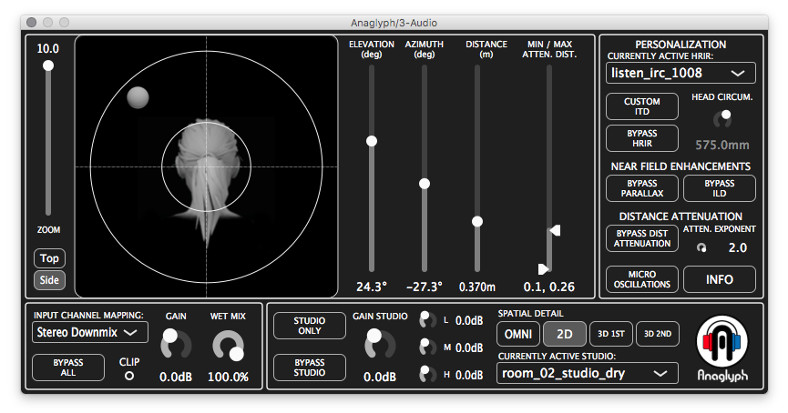

Binaural spatialization engine VST.
Integrating the results of over a decade of spatial hearing research. Handle with care.
Anaglyph is part of an ongoing research effort into the perceptual and technical capabilities of binaural rendering. Anaglyph has been designed as an audio plugin to both support ongoing research efforts as well as to make accessible the fruits of this research to audio engineers through traditional existing DAW environments. Amongst its features, Anaglyph includes a personalizable morphological ITD model, near-field ILD corrections and HRTF parallax selection, a Localisation Enhancer, an Externalisation Booster, and SOFA HRIR file support.
Download files and follow instructions according to your architecture:
(MacOS) anaglyph-macos-v0.9.0.zip
(Windows) anaglyph-windows-v0.9.0.zip
The Anaglyph plug-in can be used in Max Cycling '74 for message based control. A complete list of control messages is available in the control-msg.maxpat Max patch.
Cite: D. Poirier-Quinot and B. F.G. Katz, “The Anaglyph binaural audio engine”, in Audio Eng Soc Conv 144, (Milan), pp. 9591:1–8, May 2018. [ref]
License: ...
Credits: Anaglyph has been developed as a joint effort between different labs and researchers throughout the years supervised by B. F.G. Katz.